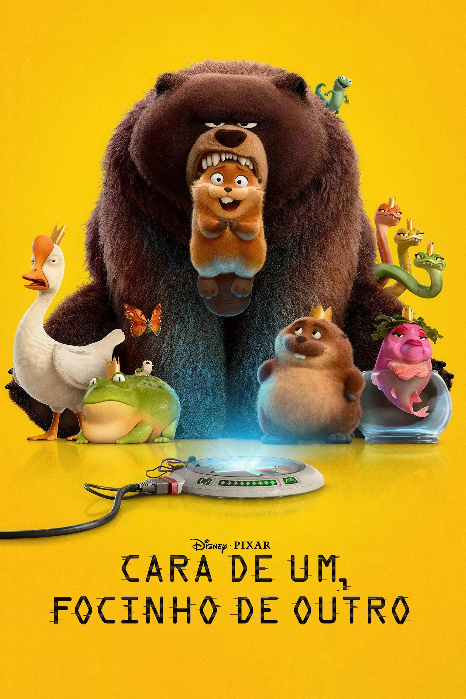

Cara de Um, Focinho de Outro

Cara de Um, Focinho de Outro (Hoppers, no original) é uma animação da Pixar onde Mabel, uma jovem apaixonada por animais, usa uma tecnologia revolucionária para transferir sua consciência para um castor robótico. Ela se infiltra no mundo animal para salvar a floresta local de um prefeito ambicioso.
Assistir Trailer